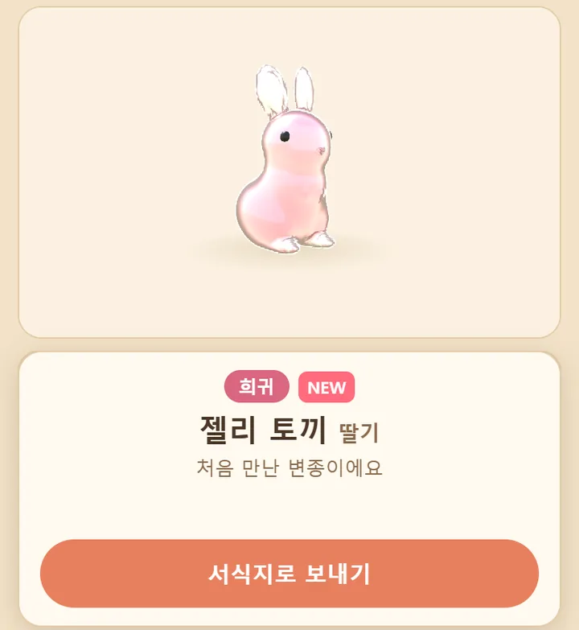
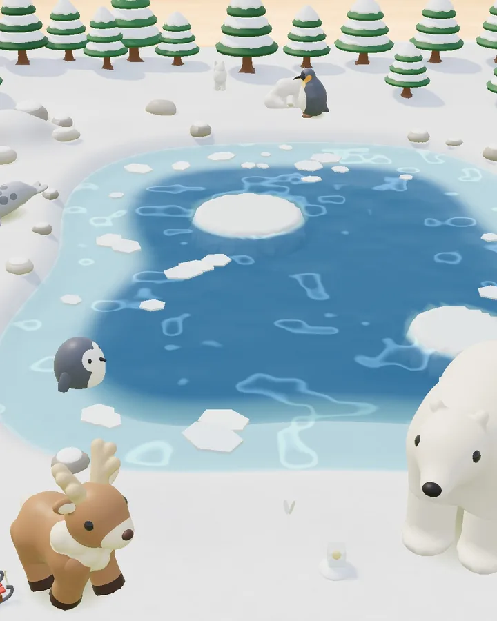
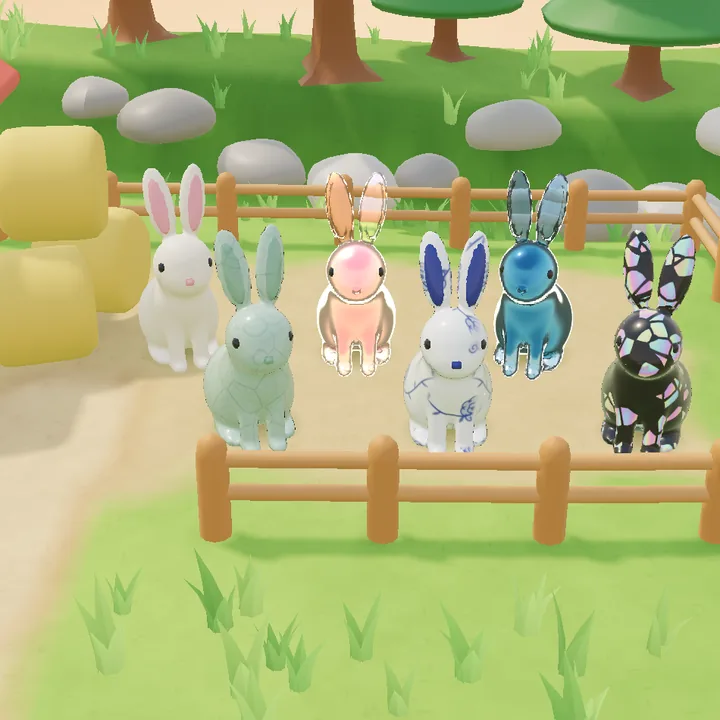
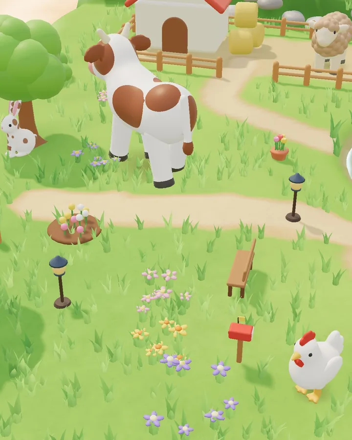
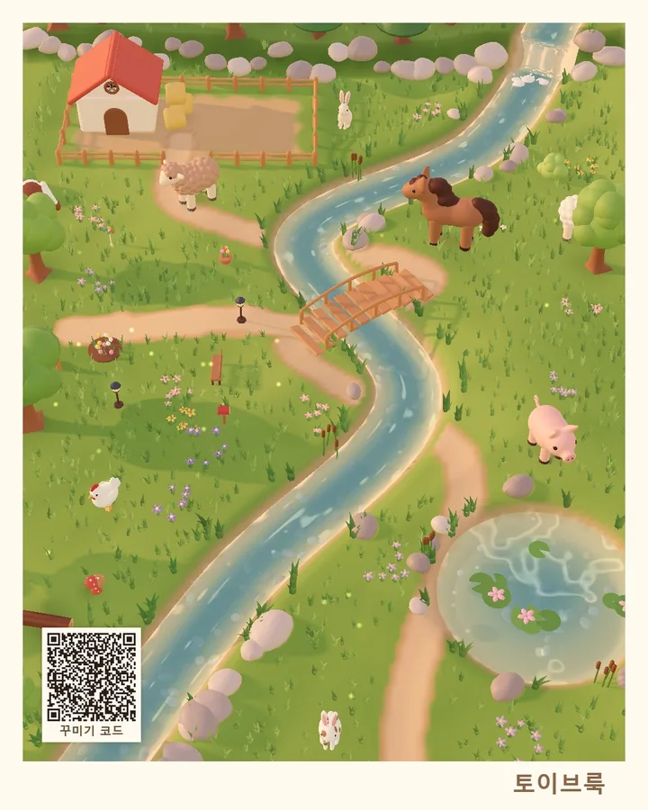

Open Beta
Toybrook
A cozy collecting game. Hatch animals that look like little toy figures, then raise and collect them in tiny habitats.
A free open beta made by one person. No payments and no ads in the game.
Nothing to install: play right in your phone's browser. Your animals are saved on that device. Beta data will be reset at the full launch.
Update emails are for ages 14 and up.
The sign-up and feedback forms are in Korean.

What kind of game is it?
A slow game for looking closely and collecting one by one. Each habitat has its own background sounds and effects.
-

Hatch from eggs
Put eggs from the nest into a hatching slot and wait. A card shows you who hatched.
-

Meadow and pond
Horses, sheep, cows, pigs, rabbits and chickens live in the meadow. Ducks, swans, turtles, otters, flamingos and capybaras live at the pond. Fill a bit of your collection and gather hearts to open the next habitat.
-

Snowfield
A snowy habitat that opens after the pond. Penguins, polar bears, seals, arctic foxes, reindeer and snowy owls live here.
-

See them in 3D
Spin the friends you've met with your finger and look up close in the collection. Switch between the baby and the grown-up, or between patterns you've found. The day you first met is written down too.
-

From baby to grown-up
Newly hatched babies have big heads and short legs. Feed them, wait a little, and they grow up.
-

Friends in different finishes
Even the same rabbit can come in jelly, glass, celadon, blue and white porcelain or mother-of-pearl. Collect them one by one in your collection and on your display shelf.
-

Decorate your habitat
Buy decor with hearts, then place it, turn it, paint the ground and expand your land. Share how it looks with a decor code.
-

Photo mode
Hide the buttons and shoot up close and low. Pick a time like morning, sunset or night, weather like rain, fog or a rainbow, plus a filter and a frame, and save it as a photo.
It's an open beta, so screens may change bit by bit. Animals and decor from the beta start over at the full launch.
FAQ
Where are my animals saved?
In the browser of the device you play on. Your save is never sent to a server, so it won't show up on another device or browser. Only grouped usage stats with no cookies are sent, and you can turn them off in the game's settings (Privacy policy, section 10).
Clearing your browser history and site data clears your save too, and a private window clears it when you close it. Make a backup code in the game under Settings › My save backup, and you can carry on from that code on another device.
On iPhone and iPad, open the game from Safari's Share button › "Add to Home Screen" to keep your progress safe even if you don't visit for a while. Use a backup code when you change devices.
What happens when the beta ends?
Beta data will be reset at the full launch. Animals and decor from the beta don't carry over, and everyone starts fresh at launch.
How do I use it like an app on my phone?
On the game screen, tap "Add to Home Screen" in your browser menu. An icon appears, and it opens without the address bar.
- iPhone Safari: Share button at the bottom › Add to Home Screen
- Android Chrome: ⋮ at the top right › Add to Home screen (or Install app)
Habitats you've opened once also open without internet. On iPhone, Toybrook on the Home Screen and Safari keep separate saves, so use a backup code to move animals collected in Safari.
Where do I send feedback or report a bug?
Use this feedback form or Settings › Send feedback in the game. We never ask for your name or email. The form is in Korean, but feel free to write in English.
If something went wrong, tap Settings › Report a problem in the game. It copies the game version, your device type and recent errors. Paste it into the form and tell us what happened. It helps a lot with fixing things.
Stay in touch
Get update news by email, or follow along on Threads as the game is made.
For ages 14 and up.
Tell us how it felt with the feedback form. We never ask for your name or email.